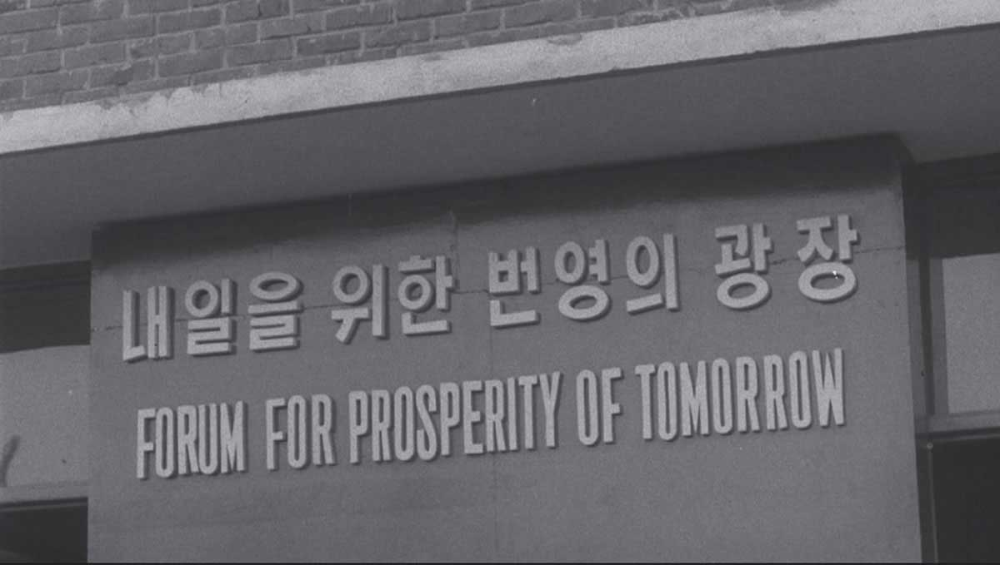

Freespace: BIENNALE ARCHITETTURA 2018
Freespace describes a generosity of spirit and a sense of humanity at the core of architecture's agenda, focusing on the quality of space itself. More on the Biennale.
How is this exhibition connected to the ‘Freespace’ theme of the 16th International Architecture Exhibition?
"If we understand the theme ’free space’ as a variation of public spaces or civic spaces, based on the traditional concept from the West, it is hard to find the foundation of it in Korean cities. It is because when urban spaces in Seoul were reorganized in the 1960s, the spaces did not belong to the citizens. We have to continue taking back those spaces at this time. Thus, we need to keep archiving the system of the 1960s around KECC." (source)
Visitor Information
Exhibition Period: May 26th - November 25th 2018
Opening Hours: 10:00 - 18:00 (closed Mondays, except on May 28, Aug. 13, Sept. 3, and Nov. 19)
Location: Giardini della Biennale, in Sestiere Castello, 30122 Venezia VE

A. Absent Archive
Pavillion for Osaka Expo 1970
Yeouido
B. Emergent Archive
Sewoon Arcades
Guro Industrial Expo
1. Hyun-Suk Seo, Fantastic City, 2018
2. Kyoungtae Kim (EH), Reference Points, 2018
3. Jidon Jung, Light from Anywhere, 2018
4. Sungwoo Kim (N.E.E.D. Architecture), The City of Radical Shift, 2018
5. Choon Choi, Autopsy of the Future, 2018
6. Jinhong Jeon, Yunhee Choi (BARE), Dream Cells, 2018
7. Hyun Seok Kang, Gunho Kim (SGHS), Building States, 2018

Guro Industrial Expo
The Symbol Tower of the 1st Korea Trade Fair
Samsung Hall at the 1st Korea Trade Fair
Citizens visiting the 1st Korea Trade Fair, 1968
"
The Guro Industrial Exposition signaled the beginning of a new era of affluence.
"
